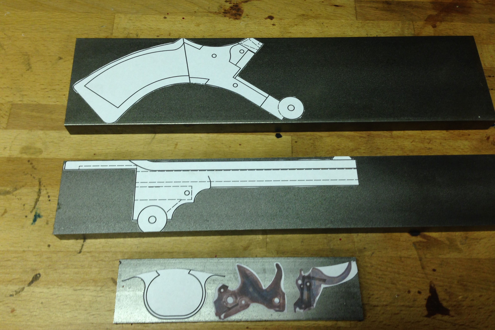
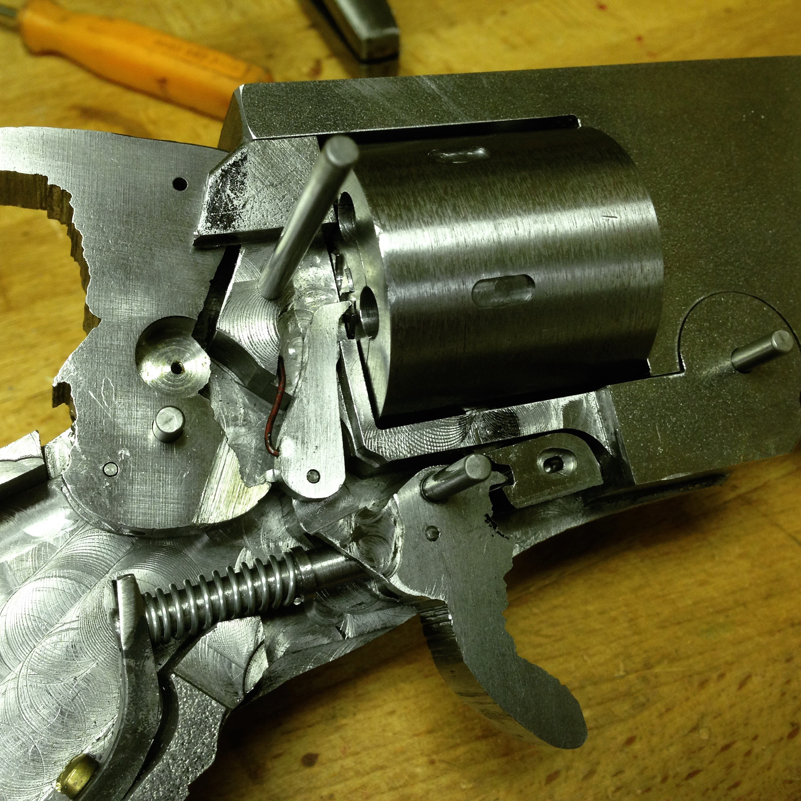
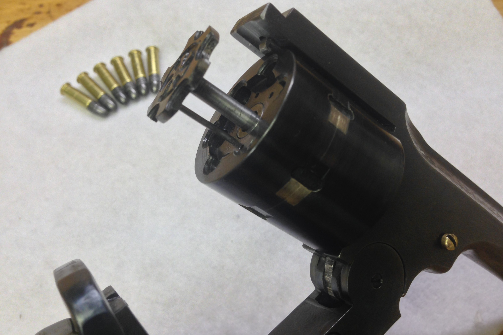
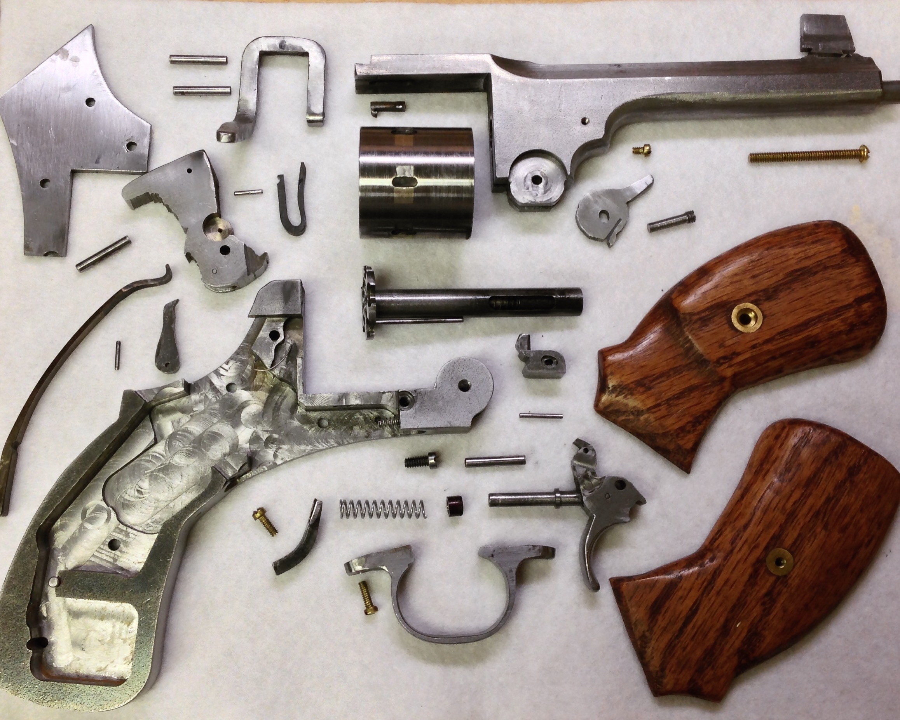
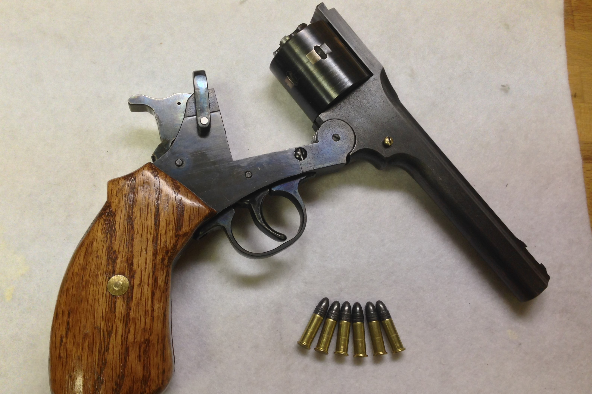

W22
Spring 2017
The W22 is a single-action, top-break, 6-shot revolver cosmetically similar to the Webley Mk VI
This was my second firearm, and the first repeating one. I decided to go with a revolver, even though it seemed a bit ambitious, because I was concerned about reliable extraction of rounds. With a revolver, I wouldn't need to worry about that. While my first gun was made mostly from hand-drawings, this gun was designed fully before building it and made extensive use of printed paper drawings and especially templates that could be glued to the steel and used as a guide for the low-accuracy parts of the gun to rapidly get it close to final shape.

An example of the printed templates I used throughout the build.
Once the frame parts were milled, I made the cylinder, hammer, and trigger, and began to tune the sear interaction and hinge. Once the ejection star and ratchet was made I could start tuning the indexing and rotation aspects of the revolver. This was mostly just a ton of careful filing and stoning and testing. I had consistent trouble with the cylinder camming upwards and rubbing the top strap due to the force of the ratchet hand, which I eventually dealt with by just cutting more clearance into the top strap. Really this was a problem because of some slop between the cylinder and the arbor it rotated on, but there wasn't very little I could do there, because if the tolerances were tighter, soot from the dirty rimfire ammunition would likely jam it. The general process of the lock is as follows: hammer is drawn back by the shooter. The bottom of the hammer pushs upwards on the trigger's sear region, drawing the trigger back. The rotation of the trigger raises the hand, rotating the cylinder. Simultaneously, the initial rotation of the trigger draws down the cylinder lock, freeing the cylinder. When the cylinder is partway to the next cylinder, the cylinder lock slips off the trigger, and drops back into position, ready to lock the cylinder when it eventually rotates around to the next position. Just as the hand has rotated the cylinder completely, the trigger sear region slips past the end of the hammer and locks in place. When the trigger is pulled by the shooter, this sear is withdrawn, the hammer is freed, and the gun fires. When the trigger is released, the trigger relatches on the cylinder lock. Pulling the trigger without cocking the hammer will rotate the cylinder one position, but will not draw back the hammer.

The internal parts, in mostly final state.
The barrel was a commercial .22lr barrel liner, epoxied into a larger bore drilled through the upper frame part. Into the hinge area of the upper frame is an internal slot that houses a ejection lever. When the gun is opened, this ejection lever catches on the bottom frame, and does not rotate, while the upper frame rotates around it. This causes the ejection lever to push the ejection star out of the end of the cylinder, extracting the cases. When the upper frame is opened fully, the space where the ejection lever catches the lower frame is pinched by the upper frame, forcing the ejection lever to slip off the lower frame. The ejection star falls back into place under spring pressure. The main latch of the gun doubles as a rear sight, and simply wraps over the top strap. It is positioned such that the gun can just be snapped closed and will lock automatically.

The gun partially opened, so the ejector star can be seen protruding

The gun fully disassembled, with most internal parts shown.

The finished gun